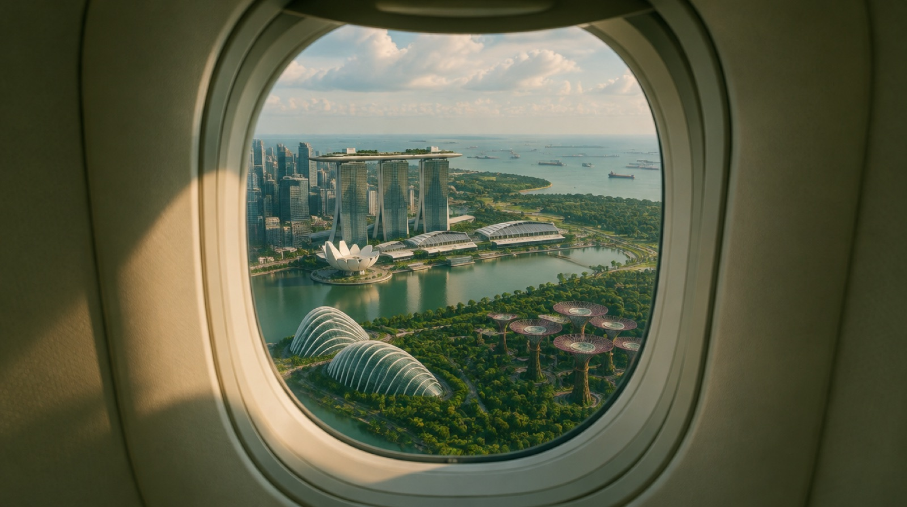
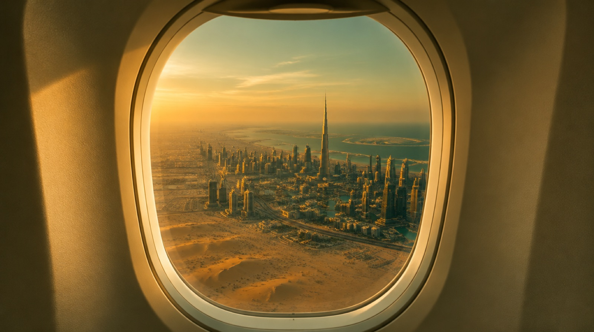
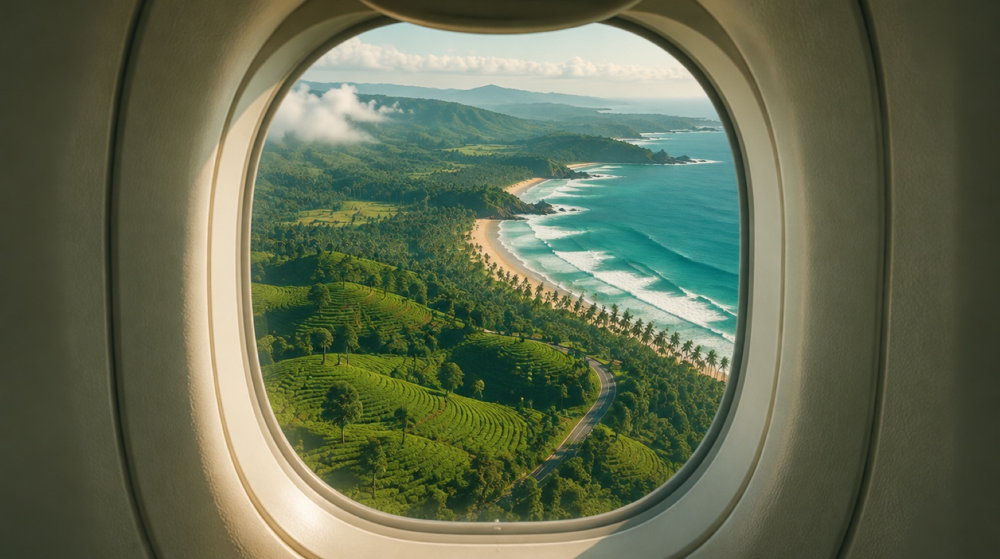
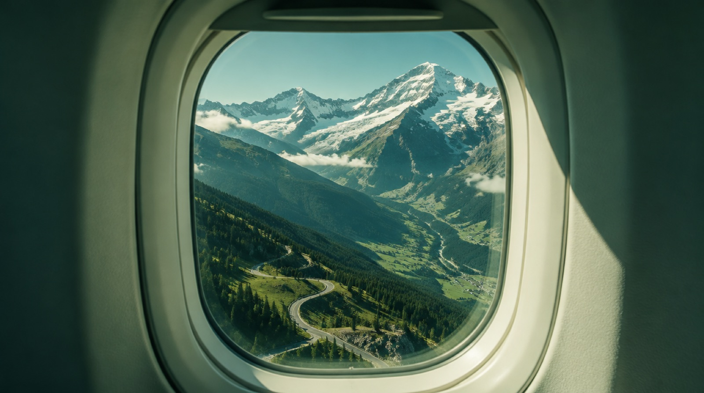
Departures · Chennai
Some roads
need wings.
The car brings me this far. The window seat does the rest.
Scroll to take off
Always the window seat
14 countries
and counting.
Asia
Singapore ·
Malaysia
December, and a Christmas tree in every mall.
Middle East
Dubai
Gold light over the desert.
The island
Sri Lanka
A girls' trip, 2022. Tea, the coast and too many drinks.
Europe
Here,
I took the wheel.
Switzerland · Austria · Germany · Czech Republic · Hungary · Italy · France · Slovakia · Poland
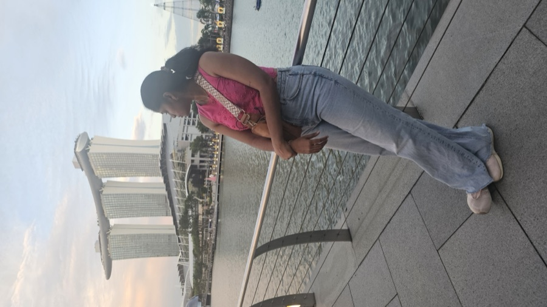
Marina Bay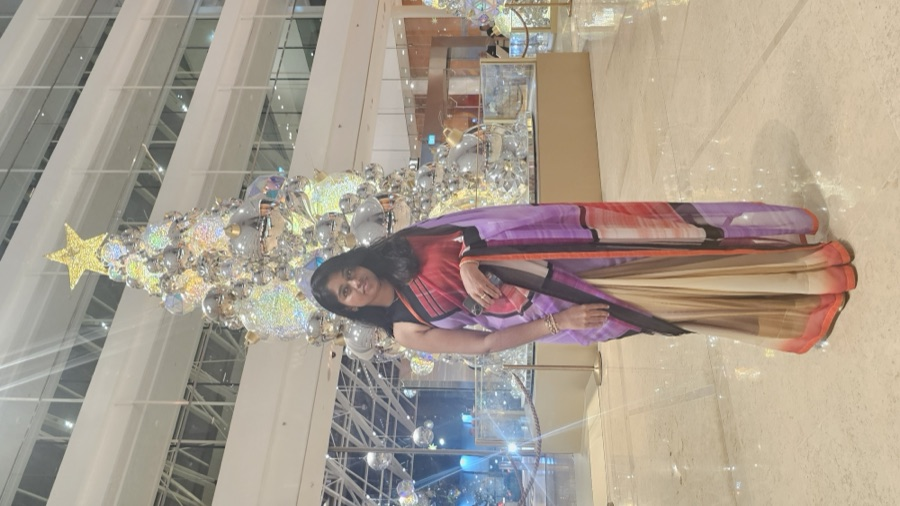
saree, again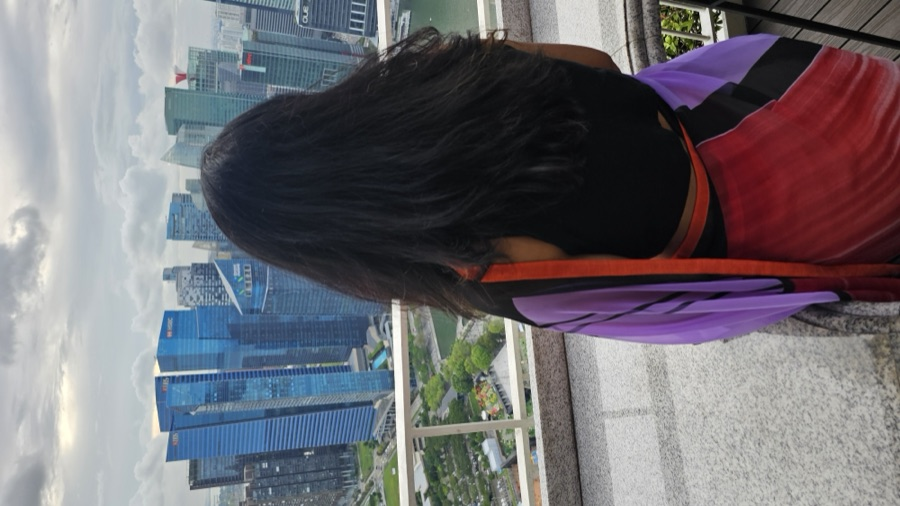
that view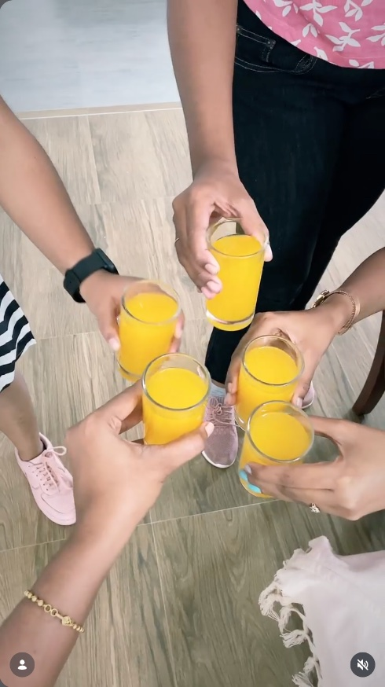
cheers!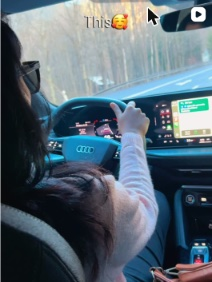
at the wheel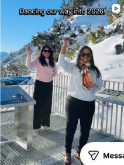
into 2026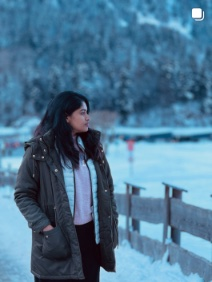
snowscape